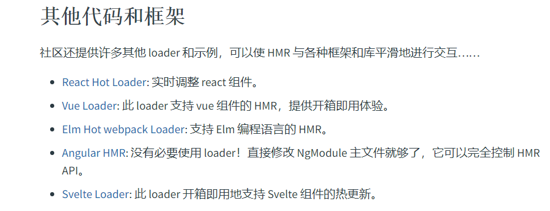
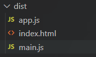
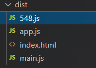

Webpack高级
Webpack高级
Webpack高级就是对Webpack进行优化，让我们在编译或运行时体验更好
- 提升开发体验
- 提升打包构建速度
- 减少代码体积
- 优化代码运行性能
提升开发体验
SourceMap
开发时我们运行的代码是经过webpack编译后的，就如下图所示
所有css、js文件以及其他的代码都被放在了一起，如果报错那就很难找出是哪里的错误，而且浏览器报错时显示的报错位置有时候不一定是错误的位置。
是什么
SourceMap（源代码映射）是一个用来生成源代码与构建后代码一一映射的文件的方案
它会生成一个xxx.map文件，里面包含源代码和构建后代码每一行，每一列的映射关系。当构建后代码出错，会通过xxx.map文件，从构建后代码出错的位置找到映射后的源代码出错位置，从而让浏览器提供源代码出错位置。
怎么用
可以查看Webpack devtool文档获取详细信息。
SourceMap的值有许多，但我们实际开发中一般只使用两种
开发模式：cheap-module-source-map
优点：打包编译速度快，只包含行映射
缺点：不包含列映射
我们只需要在开发模式的webpack配置文件中增加devtool项
1 | // ... |
这样配置之后，我们就可以在浏览器控制台很容易的找到错误的位置
蓝色划线处告诉了我们报错的位置
点击蓝色划线部分就可以看到出错位置
生产模式：source-map
优点：包含行/列映射
缺点：打包编译速度慢
1 | // ... |
提高打包构建速度
HotModuleReplacement（HMR）
当我们修改了某一块的代码时，webpack默认会将所有的模块都打包编译，速度很慢。
所以我们需要做到当修改某个模块时，只对这个模块进行打包编译，这样就可以大大加快打包的速度
HMR（热模块替换）：在程序运行中，添加、删除或修改模块，而无需重新加载整个页面
我们只需要在开发模式配置中的开发服务器项中新增一项hot即可
1 | const path = require('path'); |
这样配置之后，css样式就可以实现热模块替换，但是js还是不行。
要实现js热模块替换，需要在入口文件（此处是main.js）中配置一些代码
1 | import add from "./js/add"; |
这样可以实现js的热模块替换，但是如果js文件比较多，一个一个写就十分的麻烦
实际开发中会使用一些loader来实现热模块替换，可以在官网中找到

oneOf
我们会在wbpack中配置许多的loader来处理css、js等资源。当某个loader可以匹配处理某个资源时，还会继续向下遍历其他loader能否匹配。也就是说，每处理一个资源，都会经过所有loader的处理（看看能不能匹配），这样就会比较慢。
oneOf：顾名思义就是当资源匹配到一个loader时，就不继续向下匹配了
配置方法也很简单，只要将所有的loader包含在oneOf配置内就可以
1 | const path = require('path'); |
include/exclude
开发时我们需要使用第三方的库或插件，所有文件都下载到node_modules中了，而这些文件是不需要编译就可以直接使用的。
所以我们在处理js文件时，需要排除node_modules下的文件
include
包含，只处理xxx文件
exclude
排除，除了xxx文件以外其他文件都处理
include和exclude只能配置一项，不可以同时使用
在前面说到babel被用来将es6语法编写的代码解析为向后兼容的js语法，所以我们需要在babel的loader中配置exclude或者include。开发模式和生产模式都需要配置
1 | const path = require('path'); |
同样的，eslint也可以配置include或exclude，来表示哪些文件需要检测哪些不需要检测。
可以在eslint插件中进行配置
1 | const path = require('path') |
Cache
每次打包s文件都要经过eslint和babel编译，速度比较慢
我们可以缓存之前的eslint检测和babel编译结果，这样第二次打包时速度就会更快
所以Cache就是对eslint和babel的结果进行缓存
我们将cacheDirectory设置为true来开启babel缓存，cacheCompression设置为false关闭缓存文件的压缩（因为我们用不上这些缓存文件，压缩了反而会影响打包速度）。
配置之后，会将缓存文件暂时保存在node_modules的.cache目录下。
1 | module.exports = { |
多进程打包
当项目庞大时，打包还是会花费许多的时间，而这些时间主要花在js上。
所以我们可以多进程的打包处理js文件，这样速度就会大大加快
注意： 请仅在特别耗时的情况下使用，因为每个进程启动就有大约600ms的开销
首先，我们需要获取cpu核数，我们启动进程的数量就是cpu的核数。使用nodejs的内置模块就可以获取
1 | const os = require('os') |
下载loader
1 | npm i thread-loader -D |
然后在开发模式和生产模式中配置，下面以开发模式为例。我们将thread-loader配置在babel-loader之前使用来对babel进行多进程，在eslint中直接配置threads
最后引入插件压缩js，terser-webpack插件是webpack内置的，不需要下载
1 | //... |
减少代码体积
Tree Shaking
在开发时我们会引用一些第三方组件库或工具函数库
如果没有特殊处理的话我们打包时会引入整个库，但实际我们只使用了极小一部分代码。
Tree Shaking是一个术语，通常用来描述移除js中没有使用上的代码
但需要注意的是它依赖es模块化。
webpack默认开启了Tree Shaking这个功能，不需要我们配置
Babel
babel为编译的每个文件都插入辅助代码，使体积过大。
babel对一些公共方法使用的辅助代码，默认情况下会被添加到每一个需要他的文件中。
我们可以将这些辅助代码作为一个单独模块，来避免重复
下载@babel/plugin-transform-runtime插件，它禁用了babel自动对每个文件的重复辅助代码编写，让所有辅助代码从这里引用
1 | npm i @babel/plugin-transform-runtime -D |
在开发模式和生产模式都需要配置
1 | //... |
优化代码运行性能
Code Split
打包时会将所有的js文件打包到一起，体积太大了。而且当我们只需要某个页面的js文件时，需要一次性加载全部的js文件。
所以我们需要将打包生成的文件进行代码分割，生成多个js文件。渲染哪一部分页面就加载哪一部分的js文件
代码分割（Code Split）主要做两件事：
- 分割文件，将打包生成的文件分割成多个js文件
- 按需加载
首先改变webpack配置中的入口和出口，改成多入口多出口
1 | const path = require('path'); |
这样打包之后就会在dist目录下生成两个js文件

在实际开发中，并不是所有的js文件我们一开始就要用到。当一起加载所有js时可能会阻塞要使用的文件。
所以我们可以按需加载，当需要用到它的时候再加载。
在之前我们使用import的引入方式会将js文件一起打包到入口文件中，没有实现按需加载
我们需要使用import的特殊导入方式。以一个按钮点击为例：只有在我们点击按钮时才会加载sum.js这个js文件
1 | console.log("app"); |
在dist文件夹下还会生成这个按需导入的js模块

给模块命名
上面按需导入的模块名十分的奇怪，不方便后期维护。
所以我们可以给模块进行命名
1 | document.getElementById('btn').onclick = function() { |
然后在webpack的output中配置
1 | module.exports = { |
Preload/Prefetch
将js文件按需加载，只有当用到它的时候才会加载它，那么当js文件比较大时，加载速度就会慢，用户会感觉到明显的卡顿。
preload：告诉浏览器立即加载资源prefetch：浏览器在空闲时加载资源
它们的共同点：都是只加载，不执行。且都有缓存
它们的区别：
- preload加载优先级高，prefetch加载优先级低
- preload只加载当前页面需要使用的资源，prefetch不仅可以加载当前页面使用资源，还可以加载其他页面需要使用的资源
注意： 两者的兼容性都比较差，preload稍微好一点
Core-js
之前我们用babel对js进行了兼容性处理，它能将es6及一下的语法进行编译，但是一些es6之后的语法，例如async函数、promise对象等，它是无法处理的
core-js是专门用来做es6及以上api的编译的
下载包
1 | npm i core-js -D |
在打包入口js文件中引入即可
1 | // ... |
但是这样引入的做法是将整个core-js包都引入，会大大增加打包的大小。
所以我们可以手动引入，例如我们需要它来解析promise语法。（具体引入什么文件可以去node_modules中找到core-js查看）
1 | // ... |
这样手动引入还是有点麻烦，可以配置babel来帮我们按需引入
对babel.config.js进行配置，我们其实是对智能预设@babel/preset-env进行配置，先将它用数组包裹，数组的第二项是一个对象，就是它的配置
1 | module.exports = { |